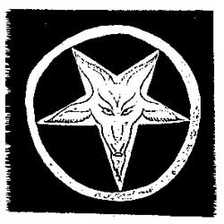

The Occult
The Occult, throughout history, stands as probably the biggest-feared and real-life cases known to date. It is one of those groups, just like Illuminati or the Freemasons (both of which have been linked to possible occult activity from certain opinions) that everybody thinks they know is out there, and too afraid to actually look. Basically, boiled down, the occult focuses on the worship of Satan or the Antichrist. Even the Catholic Church has released information about occult activity and its presence in the world, and the US specifically. This is the group that most of us see in horror movies and television shows, and it drives our fear of the subject matter even further. Below is the universally-used symbol of the occult, or at least what they use in their rituals and practices. Another word strongly associated is Satanism, which is obviously the worship of Satan himself.

Because the subject has years, even centuries of storied cases and research, it is hard to compress into one place. It is again one of those things that means something different to whoever you ask. A full, in-depth look at Satanism can be seen here, however.